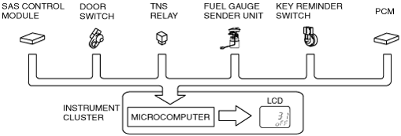
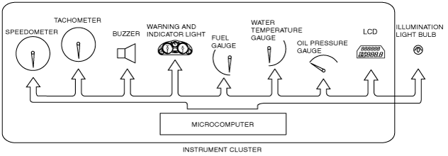

Technical Guide ➭ BODY & ACCESSORIES ➭ INSTRUMENTATION/DRIVER INFO. ➭ INPUT/OUTPUT CHECK MODE OPERATION
INPUT/OUTPUT CHECK MODE OPERATION
id092200100900
• Refer to Mazda MX-5 Workshop Manual.
• When the parts listed in the chart are operated and a signal is output to the instrument cluster, the built-in microcomputer determines the operability of the input circuit based on that signal.
|
Check code |
Parts sending input signal |
|---|---|
|
01 |
Buckle switch (driver’s side) |
|
04 |
Door switch |
|
08 |
TNS relay |
|
22 |
Fuel gauge sender unit |
|
31 |
Key reminder switch (built into the ignition switch or steering lock unit) |
|
58 |
Buckle switch (passenger’s side) |
|
59 |
Fuel system signal |
|
 amxzzn00000675 |
• By operating the parts listed in the chart, the built-in microcomputer determines the operability of the individual parts.
|
Check code |
Parts sending input signal |
|---|---|
|
12 |
Speedometer |
|
13 |
Tachometer |
|
14 |
Buzzer |
|
16 |
Fuel-level warning light |
|
18 |
Ignition key illumination output |
|
23 |
Fuel gauge |
|
25 |
Water temperature gauge |
|
26 |
LCD, warning and indicator light |
|
28 |
Oil pressure gauge |
|
57 |
Panel light control |
|
 amxzzn00000676 |
• The PID/data monitoring items for the instrument cluster is as shown in following the table:
Monitor item table
—: Not applicable
|
Monitor item |
Input-output signal/part name |
Unit/State |
Terminal |
|
|---|---|---|---|---|
|
IC_DTC_CNT |
Number of continuous DTCs |
— |
— |
|
|
IC_ECT |
Water temperature gauge |
°F |
°C |
1J, 1L |
|
IC_NUMKEYS |
Number of key ID numbers registered with the vehicle |
— |
— |
|
|
IC_ODO_CNT |
Odometer |
m |
1J, 1L |
|
|
IC_SPDMTR |
Speedometer |
MPH |
KPH |
|
|
IC_TACHO |
Tachometer |
RPM |
||
|
IC_VPWR |
Power supply voltage |
V |
1C |
|